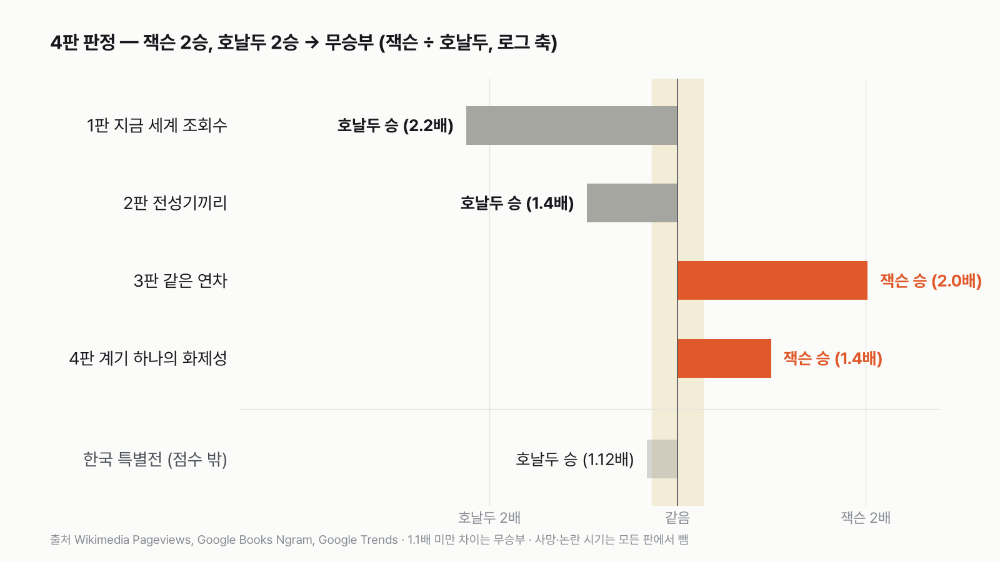
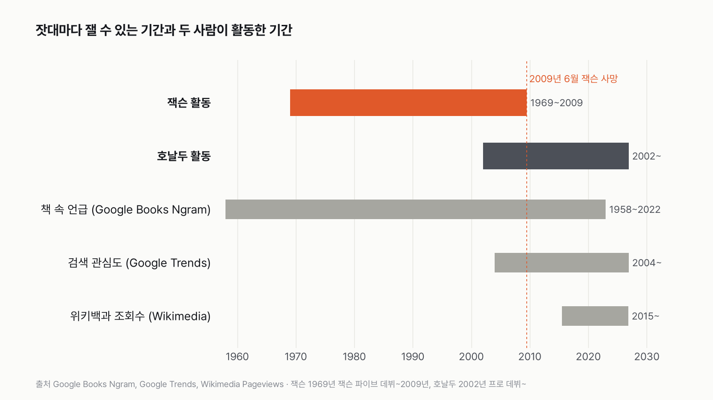
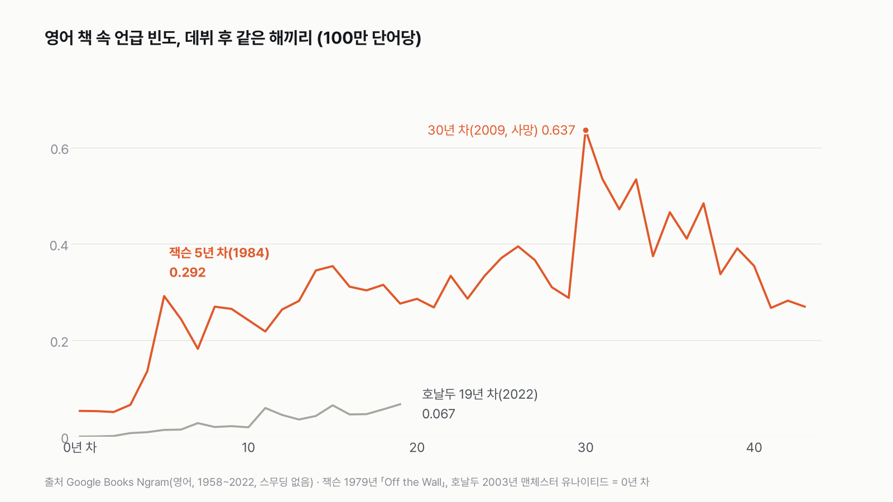
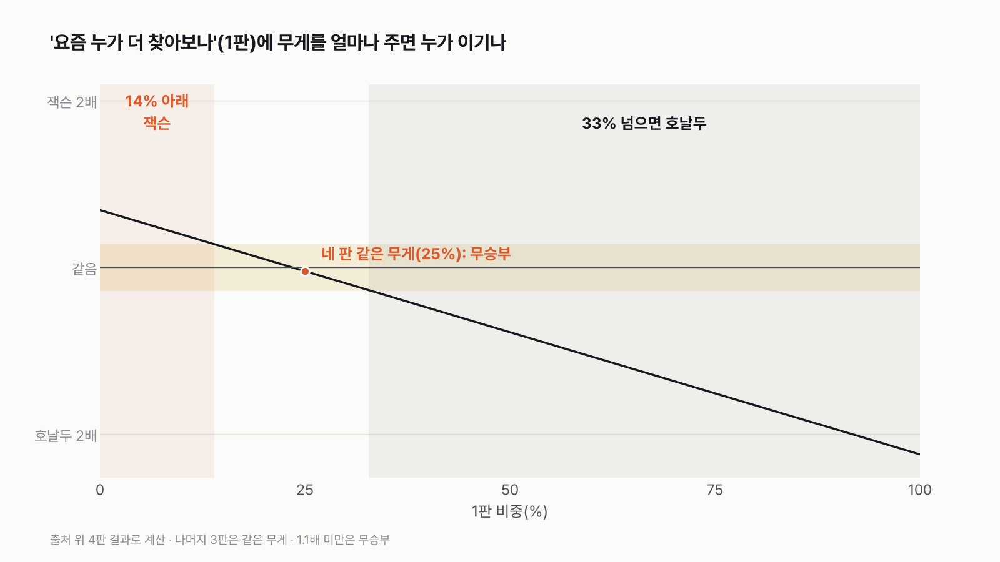
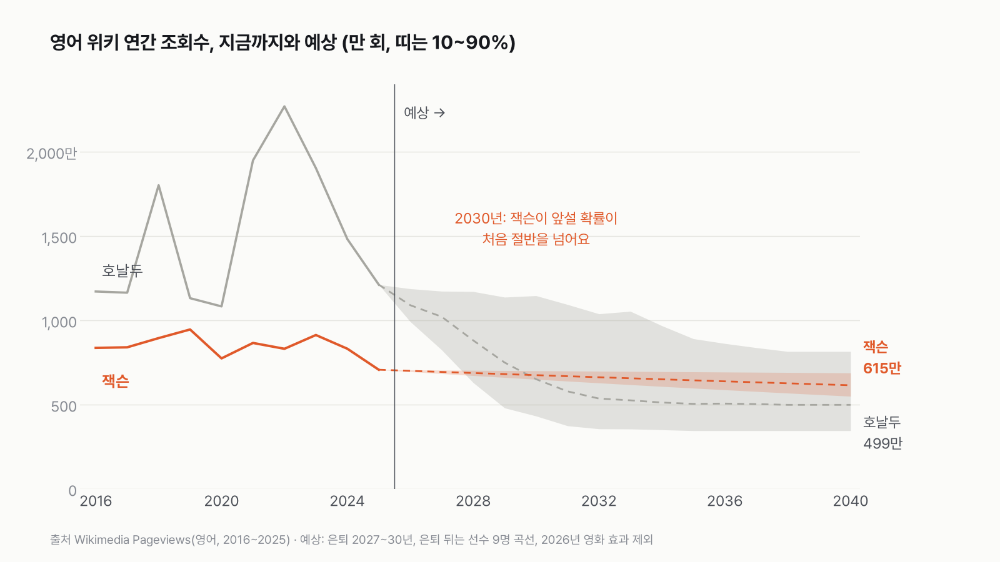

잭슨 vs 호날두, 4판 2승 2패로 비겼어요
활동 시기가 다른 두 사람을 같은 규칙으로 붙이면 승부가 반반으로 갈려요. 판정이 규칙에 따라 어떻게 바뀌는지도 표로 같이 보여 드려요.

3줄 요약
- 최종 판정은 무승부예요. 점수에 들어가는 네 판에서 잭슨 2승, 호날두 2승이에요.
- 지금 세계 조회수와 전성기끼리는 호날두, 데뷔 뒤 같은 연차끼리와 계기 하나의 화제성은 잭슨이 이겨요.
- 한국 특별전(점수 밖)은 호날두가 근소하게 이겨요. 한국어 위키백과에선 잭슨이 2배였지만, 한국 구글 검색은 호날두가 2.6배였어요.
| 판 | 승자 | 승부를 가른 숫자 |
|---|---|---|
| 1 지금 세계 조회수 | 호날두 | 2025년 2,890만 대 1,327만 |
| 2 전성기끼리 | 호날두 | 검색 가장 높은 달 28 대 7 (책은 잭슨 2.1배) |
| 3 같은 연차 | 잭슨 | 데뷔 10~19년 차 책 언급 2.0배 |
| 4 계기 하나의 화제성 | 잭슨 | 평소의 5.7배 대 4.1배 |
| 한국 특별전 (점수 밖) | 호날두 | 한국 검색 14.2 대 5.4 (한국어 위키는 잭슨 7만 100 대 3만 3,573) |
최종: 잭슨 2승, 호날두 2승으로 비겼어요.
규칙을 조금씩 바꾸면 판정도 바뀌어요. 한국 특별전을 점수에 넣으면 호날두가 3승 2패로 이기고, 논란 시기를 빼지 않으면 2판이 무승부가 돼 잭슨이 이겨요. 무승부 기준을 1.05배나 1.15배로 바꾸거나, 데뷔 해를 다르게 잡아도 무승부는 그대로예요. 규칙별 판정은 근거 탭의 '판정 민감도' 표에 다 적었어요.


1판 지금 세계 조회수 — 호날두 승
2025년 18개 언어 위키백과를 합치면 호날두 문서가 2,890만 번, 잭슨 문서가 1,327만 번 열렸어요. 18개 언어 중 16곳에서 호날두가 많았어요. 지금 누가 더 찾아지느냐는 질문엔 호날두예요.
올해는 달랐어요. 잭슨 일대기 영화 「마이클」이 4월 24일 북미에서 개봉하자, 2026년 1~10월 18개 언어 합계가 잭슨 3,103만, 호날두 2,853만으로 뒤바뀌었어요. 1판은 '평소에 누가 더 찾아지나'를 재는 판이라, 영화가 없던 2025년으로 판정했어요.
2판 전성기끼리 — 호날두 승
책에서는 잭슨이 앞서요. 사망 전, 논란 시기를 뺀 잭슨의 가장 높은 해와 호날두의 가장 높은 해를 붙이면 영어 책 5.4배, 프랑스어 3.4배, 독일어 3.1배로 잭슨이고, 스페인어는 호날두 1.5배, 이탈리아어는 호날두 1.05배예요. 다섯 언어를 합치면 잭슨 2.1배예요.
검색에서는 호날두가 크게 앞서요. 구글 검색이 생긴 2004년부터 잭슨이 세상을 떠나기 전까지, 논란 시기를 빼면 잭슨의 가장 높은 달은 2009년 3월의 7이에요(두 사람 통틀어 가장 높은 달 = 100). 호날두의 가장 높은 달(2022년 12월)은 28이에요. 호날두 4배예요. 검색이 생겼을 때 잭슨의 전성기는 이미 지나 있었어요. 책과 검색을 합치면 호날두 1.4배로 이 판은 호날두예요.
3판 같은 연차 — 잭슨 승
같은 연차끼리 맞추면 잭슨이 이겨요. 이건 저도 놀랐어요. 영어 책에서 잭슨 5년 차(1984년, 「Thriller」가 나온 1982년의 2년 뒤)는 100만 개당 0.292, 호날두 5년 차(2008년)는 0.014예요. 21배예요.


판정은 한 해가 아닌 데뷔 10~19년 차 열 해의 평균으로 했어요(잭슨은 논란 시기인 1993·1994년을 뺀 여덟 해). 영어 책 5.7배, 프랑스어 2.9배, 독일어 2.4배로 잭슨이고, 스페인어(호날두 1.15배)와 이탈리아어(호날두 1.05배)는 비슷해요. 다섯 언어를 합치면 잭슨 2.0배예요. 잭슨 데뷔를 잭슨 파이브(1969년), 호날두를 스포르팅(2002년)으로 잡아도 잭슨이 1.11배로 아슬아슬하게 이겨요.
4판 계기 하나의 화제성 — 잭슨 승
각자 가장 크게 화제가 된 한 번을 같은 잣대로 붙였어요. 18개 언어 위키백과 월 조회수가 직전 12개월 평균의 몇 배까지 튀었는지예요. 잭슨은 영화가 개봉한 다음 달인 2026년 5월에 평소의 5.7배(839만 번), 호날두는 카타르 월드컵이 열리고 새 팀 이적이 발표된 2022년 12월에 평소의 4.1배(1,374만 번)였어요. 이 판은 '사건 하나가 관심을 얼마나 끌어올렸나'를 재는 판이라 영화가 들어가는 게 맞아요. 양으로는 호날두가 많지만, 평소보다 얼마나 튀었는지로는 잭슨이 1.4배예요.
한국 특별전 (점수 밖) — 호날두 승
한국어 위키백과에서는 2025년 잭슨 문서가 7만 100번, 호날두 문서가 3만 3,573번 열려서 잭슨이 2배였어요. 세상을 떠난 지 16년 된 가수가 현역 축구 선수를 앞선 거예요. 그런데 한국 구글 검색은 반대였어요. 2025년 한국의 검색 관심도 평균은 호날두 14.2, 잭슨 5.4로 호날두가 2.6배예요. 같은 한국에서도 어디서 찾느냐에 따라 순서가 달랐어요. 둘을 합치면 호날두 1.12배로 근소한 호날두 승이에요.
무게를 바꾸면
네 판에 같은 무게(각 25%)를 주면 비겨요. 1판('요즘 누가 더 찾아보나')의 비중이 약 14%보다 낮으면 잭슨이, 33%를 넘으면 호날두가 이겨요. 요즘 관심을 크게 보는 사람에게는 호날두, 옛날까지 함께 보는 사람에게는 잭슨이에요.


연장전: 앞으로는 — 판정 보류
호날두가 은퇴한 뒤 영어 위키백과에서 잭슨이 다시 앞설 확률은, 출발 해를 어디로 잡느냐에 따라 2030년 10~94%로 흔들려서 판정을 보류해요. 은퇴 선수 9명·세상을 떠난 스타 5명의 곡선과 가정 묶음은 근거 탭에 적었어요.


두 사람을 붙여 보니, 세상을 떠난 지 16년이 지나도 같은 잣대 위에서 현역 세계 최고 선수와 비기는 사람이 있다는 게 가장 오래 남았어요.
이 숫자는 어디서 왔나요
출처
기준일 위키백과 2015년 7월~2026년 10월, 책 1958~2022년, 검색 2004년 1월~2026년 11월(11월은 덜 찬 달). 모두 2026년 11월 6일에 받았어요.
Wikimedia FoundationPageviews
- 위키백과 문서별 월간 조회수 (Wikimedia Pageviews API)원본 보기
18개 언어, 두 사람 문서의 월별 조회수 2015-07~2026-10, 은퇴 선수 9명·세상을 떠난 스타 5명(영어)
Wikimedia FoundationWikidata
- 언어별 문서 제목Wikidata Q2831원본 보기
언어마다 어느 문서를 셀지 정하는 데 씀
GoogleBooks Ngram Viewer
- 책 속 언급 빈도 (Google Books Ngram)원본 보기
영어·프랑스어·독일어·스페인어·이탈리아어 책, 1958~2022년
GoogleTrends
- 검색 관심도 (Google Trends)원본 보기
2004년 1월~2026년 11월 월별, 세계·한국
어떻게 셌나요
- 점수에 들어가는 네 판은 서로 겹치지 않는 잣대예요.
- 1판 지금 세계 조회수: 2025년 위키백과 조회수, 18개 언어 합계
- 2판 전성기끼리: 책 속 언급 빈도의 가장 높은 해(5개 언어)와 검색 관심도의 가장 높은 달
- 3판 같은 연차: 데뷔 10~19년 차의 책 속 언급 빈도 평균(5개 언어). 잭슨은 솔로 앨범 「Off the Wall」(1979년), 호날두는 맨체스터 유나이티드 입단(2003년)을 0년 차로 봤어요
- 4판 계기 하나의 화제성: 위키백과 월 조회수(18개 언어)가 직전 12개월 평균의 몇 배까지 튀었는지, 각자 가장 큰 한 번끼리
- 모든 판에서 똑같이 뺀 시기: 잭슨이 세상을 떠난 달과 그 뒤(책은 2009년부터, 검색은 2009년 6월부터), 논란이 있었던 시기(1993~1994년, 2003~2005년, 2019년 3월)예요.
- 한국 특별전은 따로 보여 드려요. 2025년 값이라 1판 '지금'과 겹쳐서, 점수에 넣으면 '지금'을 두 번 세게 돼요.
- 18개 언어는 영어, 일본어, 스페인어, 독일어, 러시아어, 프랑스어, 이탈리아어, 중국어, 포르투갈어, 폴란드어, 아랍어, 인도네시아어, 한국어, 튀르키예어, 페르시아어, 네덜란드어, 베트남어, 힌디어예요.
- 위키백과 조회수는 사람이 문서를 연 횟수예요(봇으로 분류된 조회는 빠짐). 책 속 언급 빈도는 그해 책에 나온 두 단어 묶음 100만 개 가운데 그 이름이 몇 번인지예요. 검색 관심도는 같은 요청 안에서 가장 높은 달을 100으로 맞춘 상대값이에요.
- SNS 팔로워 수는 쓰지 않았어요. 호날두는 팔로워가 가장 많은 사람 중 하나지만, 잭슨이 활동하던 때는 SNS가 없어서 같은 잣대가 안 돼요.
한계 8가지
이 데이터로 말할 수 없는 것
- 모두 '찾아본 횟수'나 '언급된 비율'이에요. 인기·실력·음반 판매·경기 기록과는 다른 숫자예요.
- 위키백과는 2015년 7월부터, 검색은 2004년부터라 잭슨의 1980년대 전성기는 책으로만 볼 수 있어요. 책 자료는 2022년에서 끝나고 사건보다 1~3년 늦게 반영돼서, 호날두의 최근 몇 년은 덜 들어가요.
- 책 속 'Michael Jackson'에는 같은 이름의 다른 사람도 섞여 있어요. 한국어·일본어 책 자료는 없어요.
- 검색 관심도는 상대값이라 다른 요청끼리, 다른 나라끼리 크기를 바로 비교할 수 없어요.
- 책 자료와 검색 자료는 구글이 화면에 보여 주는 값을, 그 화면이 쓰는 주소로 받았어요. 따로 문서로 공개된 다운로드 API는 아니에요.
- 사망·논란 시기를 빼는 규칙은 잭슨 값만 깎는 구조예요. 같은 원칙으로 호날두의 논란 시기(2018년 전체, 2022년 11~12월)를 빼도 판정은 그대로예요(전성기 0.790, 같은 연차 2.189, 화제성 1.667).
- 판 구성, 제외 시기, 무승부 기준(1.1배)은 판정 전에 정한 규칙이에요. 규칙을 바꾸면 판정이 바뀔 수 있어서 민감도 표를 같이 공개했어요.
- 조회수가 왜 늘거나 줄었는지는 이 숫자로 알 수 없어요. 영화 개봉이나 월드컵은 같은 때 있었던 일이에요.
다음 대결
대결 다 보기
판다 vs 실험맨
판다 vs 실험맨, 다섯 판 승부로 하루에 '더 많이 먹는' 쪽은?
A판다vsB실험맨
투표하러 가기

배달·외식비 vs 스마트폰
실험맨이 1년 동안 사 먹는 밥값(배달 포함)으로 최신 스마트폰을 살 수 있을까?
A산다vsB못 산다
투표하러 가기

20대 여성 vs 65세 이상 남성
20대 여성 실험맨 vs 65세 이상 남성 실험맨, 네 판 승부로 하루 운동을 더 많이 하는 쪽은?
A20대 여성vsB65세 이상 남성
투표하러 가기

짜장면 vs 치킨
짜장면 vs 치킨, 다섯 판 승부로 값이 더 많이 오른 국민 음식은?
A짜장면vsB치킨
투표하러 가기

출퇴근 vs 연차
실험맨이 1년 동안 출퇴근에 쓰는 시간과 연차 휴가로 쉬는 시간, 세 판 승부로 더 긴 쪽은?
A출퇴근vsB연차 휴가
투표하러 가기

경복궁 vs 에버랜드
경복궁 vs 에버랜드, 다섯 판 승부로 1년에 사람이 더 많이 찾는 곳은?
A경복궁vsB에버랜드
투표하러 가기

마라톤 세계기록 vs 서울 버스
마라톤 세계기록 속도로 뛰는 사람 vs 서울 시내버스, 세 판 승부로 더 빠른 쪽은?
A세계기록 사람vsB서울 버스
투표하러 가기

실험맨 vs 수영장
실험맨 혼자 1년 쓴 수돗물로 25m 수영장 레인 한 줄을 채울 수 있을까?
A채운다vsB못 채운다
투표하러 가기
새 글 나오면 받아 보기
피드 리더 앱에 이 사이트 주소를 한 번 넣어 두면, 새 글이 올라올 때 앱에 떠요. 가입이나 메일 주소는 필요 없어요.
받는 법 보기
- 피드 리더 앱을 하나 골라요. 새 글을 모아 보여 주는 앱이에요. 예를 들면 Feedly나 Inoreader가 있어요. 둘 다 무료고 웹·휴대폰에서 써요.
- 앱에서 '구독 추가'(+)를 누르고 아래 주소를 붙여 넣어요.
- 끝이에요. 새 글이 올라오면 앱 목록에 떠요.
https://protofu.github.io/opendata-insight/feed.xmlFeedly를 쓴다면 여기를 눌러 바로 추가할 수도 있어요.